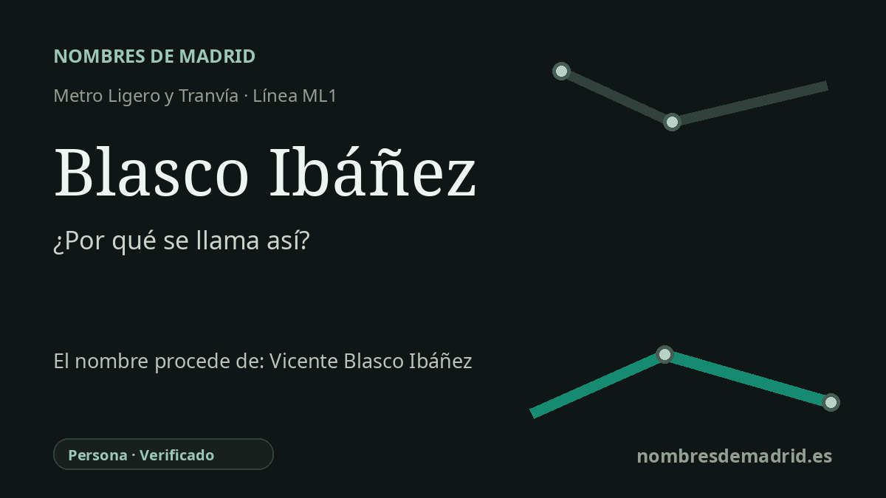

Publicado el · Investigación de Nombres de Madrid · Cómo verificamos cada origen · 7 fuentes consultadas
Respuesta rápida
La estación Blasco Ibáñez toma su nombre de la calle de Vicente Blasco Ibáñez, situada junto a la parada de ML1 en Sanchinarro. La calle recuerda al novelista, periodista y político republicano valenciano Vicente Blasco Ibáñez (1867-1928).
La historia del nombre
La estación de metro ligero se llama así por su entorno viario inmediato. El CRTM sitúa la parada en la calle del Príncipe Carlos, y el plano zonal de la estación muestra la calle de Vicente Blasco Ibáñez junto al ámbito de acceso, por lo que el nombre de la estación se entiende mejor como una referencia abreviada a esa calle.
Detrás del nombre de la calle está Vicente Blasco Ibáñez, nacido en Valencia en 1867 y fallecido en Menton, Francia, en 1928. No fue solo novelista: la Biblioteca Nacional de España lo presenta también como periodista y político republicano, fundador de El Pueblo y diputado nacional durante seis legislaturas entre 1898 y 1907.
Su carrera literaria llevó el nombre mucho más allá de Valencia. Obras como Arroz y tartana, Cañas y barro y Los cuatro jinetes del Apocalipsis consolidaron su reputación, y esta última alcanzó una visibilidad internacional especial con la adaptación de Hollywood de 1921 dirigida por Rex Ingram. El American Film Institute señala que aquella película convirtió a Rudolph Valentino en un ídolo cinematográfico inmediato.
El nombre madrileño de transporte pertenece a una capa urbana mucho más reciente. La ML1 se puso en servicio el 24 de mayo de 2007 para conectar Pinar de Chamartín, Sanchinarro y Las Tablas, y la Comunidad de Madrid incluye Blasco Ibáñez entre las estaciones del tramo Sanchinarro-Las Tablas. El entorno es Sanchinarro, dentro del barrio de Valdefuentes y el distrito de Hortaleza, no Fuencarral-El Pardo.
La etimología es por tanto segura en cuanto a la persona homenajeada, aunque no consta el acuerdo administrativo exacto que asignó el nombre de la calle. Un acta del distrito de Hortaleza menciona el ámbito de la calle Vicente Blasco Ibáñez en relación con un proyecto aprobado definitivamente el 23 de diciembre de 1998, lo que confirma que el odónimo ya estaba en uso antes de la apertura del metro ligero.